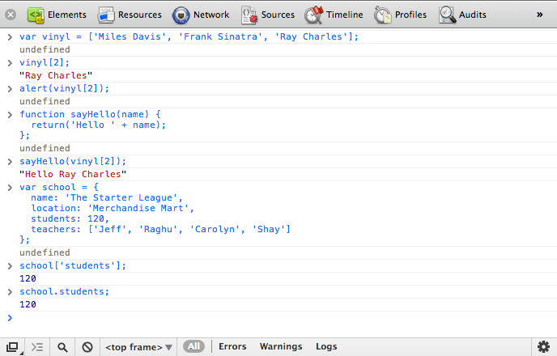

jQuery
Чтобы стать веб-дизайнером или фронтенд-разработчиком вам придётся нередко работать с JavaScript, часто упоминаемый как JS, и jQuery. Среди топовых 10000 сайтов JavaScript применяется более, чем на 92% из них, а jQuery используется свыше, чем на 63% из них. Надо ли говорить, что они довольно популярны. Вы также должны стремиться писать JavaScript или jQuery, чтобы создать собственные модели поведения в том или ином деле.
Если вы спрашиваете, что именно такое JavaScript и jQuery, этот урок даёт краткий обзор JavaScript, а затем рассматривает jQuery.
Введение в JavaScript
JavaScript предоставляет возможность добавления интерактивности на сайт, а также помогает обогатить пользовательский опыт. HTML предлагает страницу со структурой, CSS задаёт вид страницы, а JavaScript обеспечивает поведение.
Как и CSS, JavaScript должен сохраняться во внешнем файле с расширением .js, а затем ссылаться внутри HTML-документа с помощью элемента <script>. Где располагается ссылка на JavaScript внутри HTML зависит от того, когда она должна выполняться. Вообще говоря, лучшее место для ссылки на файлы JavaScript — прямо перед закрывающим тегом </body>, так что файл JavaScript загрузится после того, как весь HTML был разобран. Тем не менее, время от времени, JavaScript необходим для помощи в отображении HTML и определения его поведения, при этом можно ссылаться внутри <head>.
<script src="script.js"></script>Значения и переменные
Часть основ JavaScript включает значения и переменные. Значения, вообще говоря, — это разные типы значений, которые JavaScript распознаёт, в то время как переменные используются для хранения и обмена этими значениями.
Значения могут включать в себя строки текста, логическую истину или ложь, числа, undefined, null или другие значения, такие как функции или объекты.
Одним из популярных способов определения переменных — это начать с ключевого слова var, за которым идёт имя переменной, затем знак равенства (=) и значение, и всё заканчивается точкой с запятой (;). Имя переменной должно начинаться с буквы, подчёркивания (_) или знака доллара ($). Переменные не могут начинаться с цифры, хотя они могут быть использованы в дальнейшем, и не могут включать дефис где бы то ни было. Кроме того, JavaScript чувствителен к регистру букв, так что буквы включают от a до z, как в нижнем, так и в верхнем регистре.
Общепринятым соглашением об именовании переменных является применение CamelCase, без использования каких-либо тире или подчёркиваний. CamelCase состоит из комбинации слов без пробелов, каждое новое слово начинается с большой буквы, за исключением первого слова. Например, shay_is_awesome типично будет именоваться как shayIsAwesome.
var theStarterLeague = 125;
var food_truck = 'Кофе';
var mixtape01 = true;
var vinyl = ['Майлз Дэвис', 'Фрэнк Синатра', 'Рэй Чарльз'];Выражения
В целом, JavaScript представляет собой набор выражений, они выполняются браузером в той последовательности, которой написаны. Эти выражения предлагают команды, которые определяют разное поведение. Выражения бывают самых разных форм и размеров, несколько выражений разделяются точкой с запятой. Новые выражения должны начинаться с новой строки, а отступы должны применяться к вложенным выражениям для лучшей читаемости, но это не является обязательным.
log(polaroid);
return('bicycle lane');
alert('Поздравляем, вы ' + outcome);Функции
В добавок к основам JavaScript важно взглянуть на функции. Функции обеспечивают способ выполнения набора скриптов прямо сейчас или их сохранение для последующего использования. Функции также могут принимать разные аргументы.
Функция определяется с помощью ключевого слова function, за которым следует имя функции и списка аргументов, при необходимости, разделённых запятыми внутри скобок. Затем идёт выражение JavaScript или выражения, которые определяют функцию внутри фигурных скобок.
function sayHello(name) {
return('Привет, ' + name);
}Массивы
Как вы поняли, некоторые значения могут быть возвращены в виде массива. Массивы — это способ хранения списка элементов или значений. Массивы полезны по многим причинам, одной из которых является возможность пробежаться по ним разными методами и операторами. Кроме того, в зависимости от ситуации, массивы могут быть использованы для хранения и возврата множества различных значений.
Вообще говоря, массивы определяются внутри квадратных скобок ([]), с элементами разделёнными запятыми. Элементы начинаются с нуля и повышаются от него. При определении третьего элемента в списке он фактически идентифицируется как [2].
Объекты
JavaScript также построен на фундаменте объектов, которые представляют собой набор пар ключей и значений. К примеру, у нас может быть объект с именем school, который включает в себя ключи, также известные как свойств — name, location, students и teachers, а также их значения.
В приведённом ниже примере переменная school задаётся как объект для хранения множества свойств. У каждого свойства есть ключ и значение. Весь объект располагается внутри фигурных скобок {}, свойства разделяются запятыми, каждое из которых содержит ключ, после которого идёт двоеточие и значение.
// Объект
var school = {
name: 'The Starter League',
location: 'Merchandise Mart',
students: 120,
teachers: ['Jeff', 'Raghu', 'Carolyn', 'Shay']
};
// Массив
var school = ['Austin', 'Chicago', 'Portland'];
Рис. 6.01. С помощью инструментов разработчика, встроенных в браузер Chrome, JavaScript может быть запущен из консоли
Введение в jQuery
С базовым пониманием JavaScript и некоторых его основ, настало время взглянуть на jQuery. jQuery является библиотекой JavaScript с открытым исходным кодом, написанной Джоном Ресигом, которая упрощает взаимодействие между HTML, CSS и JavaScript. С 2006 года, когда был выпущен jQuery, он приобрёл внушительное число пользователей, будучи используемый сайтами и компаниями, большими и малыми.
Что сделало jQuery настолько популярным, так это его простота в использовании, с выборкой напоминающей CSS и понятным разделением поведения. Преимущества jQuery огромны, однако для наших целей мы рассмотрим только возможности находить элементы и выполнять с ними разные действия.
Начало работы с jQuery
Первый шаг к использованию jQuery — это установить на него ссылку в HTML-документе. Как упоминалось ранее про JavaScript, это делается с помощью элемента <script>, расположенным непосредственно перед закрывающим тегом </body>. Поскольку jQuery является самостоятельной библиотекой, лучше держать её отдельно от остального JavaScript который будет написан.
Для ссылки на jQuery есть несколько вариантов, в частности, следует ли использовать минимизированную или несжатую версию, а также воспользоваться ли сетью доставки контента (content delivery network, CDN), такую как Google hosted libraries. Если код пишется для живого, производственного окружения, то рекомендуется использовать минимизированную версию для сокращения времени загрузки. Кроме того, применение CDN, вроде Google, также помогает со временем загрузки и потенциально приносит пользу с кэшированием.
<script src="//ajax.googleapis.com/ajax/libs/jquery/1.9.0/jquery.min.js"></script>
<script src="script.js"></script>В примере кода выше, обратите внимание на второй элемент <script>, который ссылается на второй файл JavaScript. Весь обычный рукописный JavaScript и jQuery должны быть записаны в этом файле. Кроме того, этот файл специально размещён после файла jQuery, так что он может ссылаться на уже определённые функции jQuery.
Где протокол http?
Вы, возможно, заметили, что в примере выше нет протокола http в ссылке на Google CDN. http опущен преднамеренно, чтобы позволить оба соединения — http и https. При работе локально, без использования веб-сервера, протокол http необходимо включить, чтобы предотвратить попытки найти файл на локальном системном диске.
Объект jQuery
jQuery поставляется с собственным объектом, знаком доллара ($), также известным как jQuery. Объект $ сделан специально для выбора элемента, а затем возвращает этот элемент для выполнения над ним действий. Эти выборки и действия должны быть написаны в новом файле, на который ведёт ссылка за пределами актуальной библиотеки jQuery.
$();
jQuery();Готовность документа
Перед запуском любого jQuery для обхода и манипуляцией страницы, лучше подождать пока DOM не закончит её загрузку. К счастью, в jQuery есть готовое событие .ready(), которое может быть вызвано, когда HTML-документ готов к изменению. Размещая весь наш код внутри этой функции jQuery мы можем гарантировать, что код не будет выполняться, пока страница загружается и DOM не готов.
$(document).ready(function(event){
// код jQuery
});Селекторы
Как упоминалось ранее, одной из основных концепций jQuery является выбор элементов и выполнение действий. jQuery проделал большую работу по выполнению задачи выбора элемента или элементов, чрезвычайно легко подражая CSS. Кроме основных селекторов CSS, jQuery также поддерживает все уникальные селекторы CSS3, которые работают независимо от того, какой браузер используется.
Вызов объекта jQuery $() с селектором вернёт этот узел DOM для манипуляций с ним. Селектор располагается в круглых скобках ('...') и может выбирать элементы так же, как и CSS.
$('.feature'); // Селектор класса
$('li strong'); // Селектор потомка
$('em, i'); // Несколько селекторов
$('a[target="_blank"]'); // Селектор атрибута
$('p:nth-child(2)'); // ПсевдоклассКлючевое слово this
При работе внутри функции jQuery вы, возможно, захотите выбрать элемент, в котором есть указатель внутри исходного селектора. В таком случае может быть использовано ключевое слово this как указатель на элемент, выбранный в текущем обработчике.
$('div').click(function(event){
$(this);
});Фильтры выборки jQuery
Если селекторов CSS не достаточно, то помогут пользовательские фильтры встроенные в jQuery. Эти фильтры являются расширением к CSS3 и обеспечивают больший контроль над выбором элемента или его родственников.
$('div:has(strong)');Как здесь указано, эти фильтры могут быть использованы внутри селектора, однако они не является родными для DOM и несколько медленные. Наилучшие результаты с использованием этих фильтров осуществляется с помощью метода :filter(), который является частью функции обхода в jQuery.
Обход
Порой основные селекторы CSS по одиночке не нарезаны и желателен чуть более детальный контроль. К счастью, jQuery предлагает несколько методов обхода вверх и вниз по дереву DOM, фильтрации и выбора элементов при необходимости.
Чтобы начать работу с отфильтрованными элементами внутри DOM требуется сделать основную выборку, по отношению к которой будет обход. В примере ниже исходная выборка нашла все элементы <div> в DOM, которые затем фильтруется с помощью метода .not(). С помощью этого конкретного метода будут выбраны все элементы <div> без классов type или collection.
$('div').not('.type, .collection');
Методы цепочек
Для ещё большего контроля, какие элементы выбрать, разные методы обхода могут быть соединены в цепочку друг с другом, просто используя точку между ними.
В примере ниже используется оба метода .not() и .parent(). Соединённые вместе они будут выбирать только родительские элементы у <div> без классов type или collection.
$('div').not('.type, .collection').parent();Методы обхода
jQuery содержит довольно много методов обхода доступных для использования. В общем, все они делятся на три категории: фильтрация, прочие методы и обход дерева DOM. Конкретные методы в каждой категории можно увидеть ниже.
Фильтрация
- .eq()
- .filter()
- .first()
- .has()
- .is()
- .last()
- .map()
- .not()
- .slice()
Прочие методы
- .add()
- .andSelf()
- .contents()
- .end()
Обход дерева DOM
- .children()
- .closest()
- .find()
- .next()
- .nextAll()
- .nextUntil()
- .offsetParent()
- .parent()
- .parents()
- .parentsUntil()
- .prev()
- .prevAll()
- .prevUntil()
- .siblings()
Манипуляция
Выборка и обход элементов в DOM является лишь частью того, что предлагает jQuery, другой большой частью является то, что можно со всеми этими найденными элементами делать. Одной из возможностей является манипуляция этими элементами вроде чтения, добавления или изменения атрибутов или стилей. Кроме того, элементы могут изменяться в DOM, меняться их расположение, удаляться, добавляться новые элементы и так далее. В целом варианты для манипуляции элементами являются довольно обширными.
Получение и установка
Методы манипуляции наиболее часто используются в одном из двух направлений — для получения или установки информации. Получение информации вращается вокруг использования селектора в сочетании с методом, который определяет, какая часть информации должна быть извлечена. Кроме того, тот же селектор и метод также могут быть использованы для установки фрагмента информации.
// Получаем значение атрибута alt
$('img').attr('alt');
// Устанавливаем значение атрибута alt
$('img').attr('alt', 'Дикий кенгуру');В дальнейших примерах и фрагментах будут, в основном, применяться методы установки, однако они также могут использоваться и для получения.
Манипуляции с атрибутом
Частью элементов, которые возможно инспектировать и манипулировать ими, выступают атрибуты. Несколько вариантов включают в себя возможность добавлять, удалять или изменять атрибут или его значение. В приведённых ниже примерах метод .addClass() используется для добавления класса ко всем чётным пунктам списка, метод .removeClass() используется для удаления всех классов у любых абзацев и, наконец, метод .attr() используется для поиска значения атрибута title у любого элемента <abbr> и установки его на «Привет, мир».
$('li:even').addClass('even-item');
$('p').removeClass();
$('abbr').attr('title', 'Привет, мир');Методы манипуляции атрибутами
- .addClass()
- .attr()
- .hasClass()
- .prop()
- .removeAttr()
- .removeClass()
- .removeProp()
- .toggleClass()
- .val()
Манипуляции со стилем
Кроме манипуляции с атрибутами, также можно манипулировать стилем элемента с помощью различных методов. Для чтения или установки высоты, ширины или положения элемента есть несколько доступных специальных методов. Также для всех других манипуляций стилем метод .css() может обрабатывать любые изменения CSS.
Метод .css(), в частности, может быть использован для установки одного или нескольких свойств и синтаксис при этом меняется. Чтобы установить одно свойство, имя свойства и значение должны быть в кавычках и разделены запятой. Чтобы задать несколько свойств, свойства должны быть вложены в фигурные скобки с именем свойства в camelCase, любые дефисы удалены при необходимости, далее идёт двоеточие, а затем значение в кавычках. Каждая пара свойств и значений должна быть разделена запятой.
Высота, ширина или методы позиционирования по умолчанию используют пиксели в качестве значений, однако могут быть задействованы и другие единицы измерения. Как показано ниже, для изменения единицы измерения определите значение, затем используйте знак плюс, за которым следует единица измерения в кавычках.
$('h1 span').css('font-size', 'normal');
$('div').css({
fontSize: '13px',
background: '#f60'
});
$('header').height(200);
$('.extend').height(30 + 'em');Методы манипуляции стилями
- .css()
- .height()
- .innerHeight()
- .innerWidth()
- .offset()
- .outerHeight()
- .outerWidth()
- .position()
- .scrollLeft()
- .scrollTop()
- .width()
Манипуляция DOM
И, наконец, мы можем инспектировать и манипулировать DOM, менять расположение элементов, добавлять и удалять элементы, а также без труда изменять их. Варианты для этого глубокие и разнообразные, учитывающие любые возможные изменения, которые будут сделаны внутри DOM.
Каждый отдельный метод манипуляции DOM имеет собственный синтаксис, некоторые из них описаны ниже. Метод .prepend() добавляет новый элемент <h3> только внутрь любого раздела, метод .after() добавляет новый элемент <em> только после ссылки, метод .text() заменяет текст любого элемента <h1> на текст «Привет, мир».
$('section').prepend('<h3>Избранное</h3>');
$('a[target="_blank"]').after('<em>Новое окно.</em>');
$('h1').text('Привет, мир');Методы манипуляции DOM
- .after()
- .append()
- .appendTo()
- .before()
- .clone()
- .detach()
- .empty()
- .html()
- .insertAfter()
- .insertBefore()
- .prepend()
- .prependTo()
- .remove()
- .replaceAll()
- .replaceWith()
- .text()
- .unwrap()
- .wrap()
- .wrapAll()
- .wrapInner()
События
Одним из достоинств jQuery является возможность легко добавлять обработчики событий — это методы, которые вызываются только при конкретном событии или происходящем действии. Например, метод добавления класса к элементу может быть установлен только при щелчке по элементу.
Ниже приведён стандартный селектор, он выбирает все пункты списка. Метод события .click() связан с селектором пункта списка и настроен на действия, которые происходят при щелчке по какому-либо пункту списка. Изнутри метод события .click() — это функция, обеспечивающая любые действия внутри метода, которые должны быть выполнены. Скобки непосредственно после функции доступны для передачи параметров в эту функцию, в данном примере используется объект event.
Внутри функции есть другой селектор с привязанным к нему методом .addClass(). Теперь при щелчке по пункту списка он, с помощью ключевого слова this, получает класс saved-item.
$('li').click(function(event){
$(this).addClass('saved-item');
});Гибкость событий
Метод события .click(), а также несколько других методов, на самом деле является сокращённым методом, который использует метод .on(), представленный в jQuery 1.7. Метод .on() предлагает чуть больше гибкости с помощью автоматического делегирования для элементов, которые добавляются на страницу динамически.
При использовании метода .on() первый аргумент должен быть родным именем события, тогда как второй аргумент должен быть обработчиком события. Рассматривая пример выше, метод .on() вызывается вместо метода .click(). Теперь имя события click передаётся в качестве первого аргумента внутри метода .on() с функцией обработчика, которая остаётся такой же, что и раньше.
$('li').on('click', function(event){
$(this).addClass('saved-item');
});Вложенные события
Можно иметь несколько обработчиков событий и триггеров, вкладывая один внутрь другого. В качестве примера, ниже методу .on() передаётся аргумент hover, таким образом он вызывается при наведении курсора на любой элемент с классом pagination. После вызова события .on() вызывается событие .click() для ссылки с идентификатором up.
$('.pagination').on('hover', function(event){
$('a#up').click();
});Демонстрация события
В качестве демонстрации используем аварийное сообщение. Следующие фрагменты кода показывают, как создать такое сообщение, а затем удалить его при щелчке по иконке закрытия.
HTML
<div class="notice-warning">
<div class="notice-close">×</div>
<strong>Внимание!</strong> Я сейчас потеряю терпение.
</div>JavaScript
$('.notice-close').on('click', function(event){
$('.notice-warning').remove();
});Методы событий
jQuery предлагает несколько методов, все они основаны на регистрации поведения пользователей при взаимодействии с браузером. Эти методы включают довольно много событий, наиболее популярные это события браузера, формы, клавиатуры и мыши, не ограничиваясь ими. Самые популярные из этих методов включают следующее.
События браузера
- .resize()
- .scroll()
Загрузка документа
- .ready()
Обработчики событий
- event.currentTarget
- event.preventDefault()
- event.stopPropagation()
- event.target
- event.type
Объект event
- .blur()
- .change()
- .focus()
- .select()
- .submit()
События формы
- .blur()
- .change()
- .focus()
- .select()
- .submit()
События клавиатуры
- .focusin()
- .focusout()
- .keydown()
- .keypress()
- .keyup()
События мыши
- .click()
- .dblclick()
- .focusin()
- .focusout()
- .hover()
- .mousedown()
- .mouseenter()
- .mouseleave()
- .mousemove()
- .mouseout()
- .mouseover()
- .mouseup()
Эффекты
Наряду с событиями, jQuery также предлагает несколько настраиваемых эффектов. Эти эффекты приходят через разные методы, включая методы событий для отображения и скрытия содержимого, постепенного исчезновения и появления содержимого или скольжения содержимого вверх и вниз. Все они готовы к использованию через методы и могут быть настроены лучше по своему усмотрению.
Каждый метод эффекта содержит собственный синтаксис, так что лучше сослаться на документацию jQuery по эффектам для получения конкретного синтаксиса каждого метода. Чаще всего при этом эффекты, как правило, принимают длительность, плавность, а также возможность задать функцию обратного вызова.
Анимация в CSS и jQuery
Пользовательские анимации различных свойств CSS могут быть выполнены в jQuery, хотя это несколько менее актуально, так как CSS теперь может обрабатывать анимацию самостоятельно. Анимация в CSS предлагает более высокую производительность с точки зрения обработки браузером и являются предпочтительной, насколько это возможно. Эффекты анимации jQuery с помощью Modernizr — это идеальное запасное решение для любого браузера, который не поддерживает анимацию через CSS.
Длительность эффекта
Используя метод .show() в качестве примера, первый параметр опционально доступный для передачи — это длительность, которая может быть задана с помощью ключевого слова или значений миллисекунд. Ключевое слово slow по умолчанию равно 600 миллисекундам, в то время как ключевое слово fast по умолчанию равно 200 миллисекундам. Использовать ключевое слово в качестве значения хорошо, но миллисекунды также могут быть переданы непосредственно. Ключевое слово должно указываться в кавычках, тогда как для миллисекунд этого не требуется.
$('.error').show();
$('.error').show('slow');
$('.error').show(500);Плавность эффекта
Кроме длительности, также может быть задана плавность или скорость, с которой анимация прогрессирует в разное время в течение эффекта. По умолчанию jQuery содержит два ключевых слова для плавности — значение по умолчанию swing с дополнительным значением linear. Значение по умолчанию swing запускает анимацию в медленном темпе, набирая скорость во время анимации, а затем снова замедляясь до завершения. Значение linear запускает анимацию в одном постоянном темпе в течение всей продолжительности анимации.
$('.error').show('slow', 'linear');
$('.error').show(500, 'linear');jQuery UI
Два значения плавности, которые поставляются с jQuery можно расширить за счёт разных плагинов, которые могут предложить дополнительные значения. Одним из наиболее популярных плагинов является набор jQuery UI.
Кроме новых значений плавности jQuery UI также предлагает горсть дополнительных взаимодействий, эффектов, виджетов и другие полезные ресурсы, на которые стоит взглянуть.
Функция обратного вызова
Когда анимация завершена, можно запустить другую функцию, которая называется функция обратного вызова. Она должна быть помещена после длительности или плавности, если они существует. Внутри этой функции могут быть размещены новые события или эффекты, у которых есть собственный обязательный синтаксис.
$('.error').show('slow', 'linear', function(event){
$('.error .status').text('Продолжить');
});Синтаксис эффекта
Как упоминалось ранее, у каждого метода эффекта есть собственный синтаксис, который можно найти в документации jQuery. Описанные здесь параметры длительности, плавности и функция обратного вызова являются общими, но они доступны не для каждого метода. Для обзора синтаксиса метода лучше всего задать связанные с ним вопросы.
Демонстрация эффектов
Взяв те же события из демонстрации сверху, метод .remove() теперь используется как часть функции обратного вызова в методе .fadeOut(). Использование метода .fadeOut() позволяет сделать так, чтобы аварийное сообщение затухало постепенно, а не исчезало быстро, а затем удалить его из DOM после завершения анимации.
HTML
<div class="notice-warning">
<div class="notice-close">×</div>
<strong>Внимание!</strong> Я сейчас потеряю терпение.
</div>JavaScript
$('.notice-close').on('click', function(event){
$('.notice-warning').fadeOut('slow', function(event){
$(this).remove();
});
});Основные эффекты
- .hide()
- .show()
- .toggle()
Пользовательские эффекты
- .animate()
- .clearQueue()
- .delay()
- .dequeue()
- jQuery.fx.interval
- jQuery.fx.off
- .queue()
- .stop()
Эффекты затухания
- .fadeIn()
- .fadeOut()
- .fadeTo()
- .fadeToggle()
Эффекты скольжения
- .slideDown()
- .slideToggle()
- .slideUp()
Демонстрация скольжения
HTML
<div class="panel">
<div class="panel-stage"></div>
<a href="#" class="panel-tab">Открыть <span>▼</span></a>
</div>JavaScript
$('.panel-tab').on('click', function(event){
event.preventDefault();
$('.panel-stage').slideToggle('slow', function(event){
if($(this).is(':visible')){
$('.panel-tab').html('Закрыть <span>▲</span>');
} else {
$('.panel-tab').html('Открыть <span>▼</span>');
}
});
});Демонстрация вкладок
HTML
<ul class="tabs-nav">
<li><a href="#tab-1">Особенности</a></li>
<li><a href="#tab-2">Подробности</a></li>
</ul>
<div class="tabs-stage">
<div id="tab-1">...</div>
<div id="tab-2">...</div>
</div>JavaScript
// Показать первую вкладку по умолчанию
$('.tabs-stage div').hide();
$('.tabs-stage div:first').show();
$('.tabs-nav li:first').addClass('tab-active');
// Изменить класс вкладки и отобразить содержимое
$('.tabs-nav a').on('click', function(event){
event.preventDefault();
$('.tabs-nav li').removeClass('tab-active');
$(this).parent().addClass('tab-active');
$('.tabs-stage div').hide();
$($(this).attr('href')).show();
});Ресурсы и ссылки
- JavaScript For Cats
- A Re-introduction to JavaScript на Mozilla Developer Network
- 30 Days to Learn jQuery на Tuts+ Premium
- Google Hosted Libraries
- jQuery Documentation
- jQuery Fundamentals на Bocoup
- jQuery UI
См. также

Все материалы сайта доступны по лицензии Creative Commons «Attribution-NonCommercial» («Атрибуция — Некоммерческое использование») 4.0 Всемирная, если не указано иное.